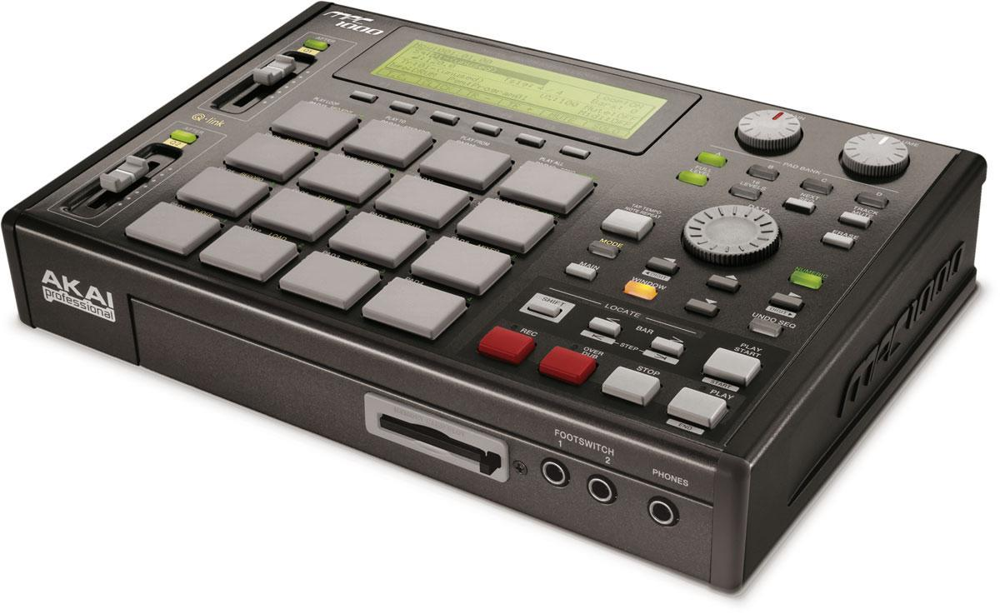

My Babies
- 6 analog voices
- Monotimbral
- Substractive synthesis
Roland JX-8P
- 12 analog voices
- Bitimbral
- Substractive synthesis
Roland Super JX
- 8 digital voices
- Multitimbral : 8 tones
- FM synthesis
Yamaha TX-81Z
- 32 digital voices
- Multitimbral : 4 tones
- Substractive synthesis
Yamaha FS1R
- 32 digital voices
- Multitimbral : 16 tones
- FM synthesis
Yamaha SY77
- 4 analog voices
- Multitimbral : 4 tones
- Substractive synthesis
Dave Smith Tetra
- 16 digital voices
- Multitimbral : 8 tones
- VM additive
Kawai K1
- 1 analog voices
- Monotimbral
- Substractive synthesis